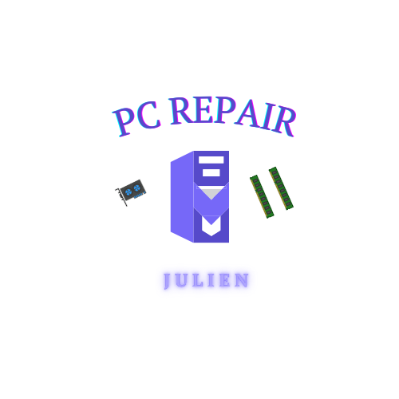

Réparation de PC, consoles de jeux et manettes à Carvin
Bonjour, je suis auto-entrepreneur à Carvin. Je monte et répare les PC, les consoles de jeux et les manettes, notamment les soucis de joysticks.
N'hésitez pas à partager ou à me contacter par message ou au 07.70.40.59.50.
Ma page Facebook Ma page InstagramDiagnostic.
À partir de 10€ si pas de réparationNettoyage et remplacement de pâte thermique.
À partir de 30€PS4, Xbox, etc... : changement de pâte thermique et nettoyage poussière
À partir de 30€Joystick qui drift manette PS4, PS5, Xbox, Switch Pro
À partir de 30€Joystick qui drift joycon Switch
À partir de 20€Montage et configuration de PC gamer ou bureautique.
Sur devis